القائمة
Cucina Italiana
باستا طازجة، وبينسا على الطريقة الرومانية، ومجموعة مختارة من الشمبانيا والنبيذ والكوكتيلات لإطالة السهرة.
Antipasti
المقبلات
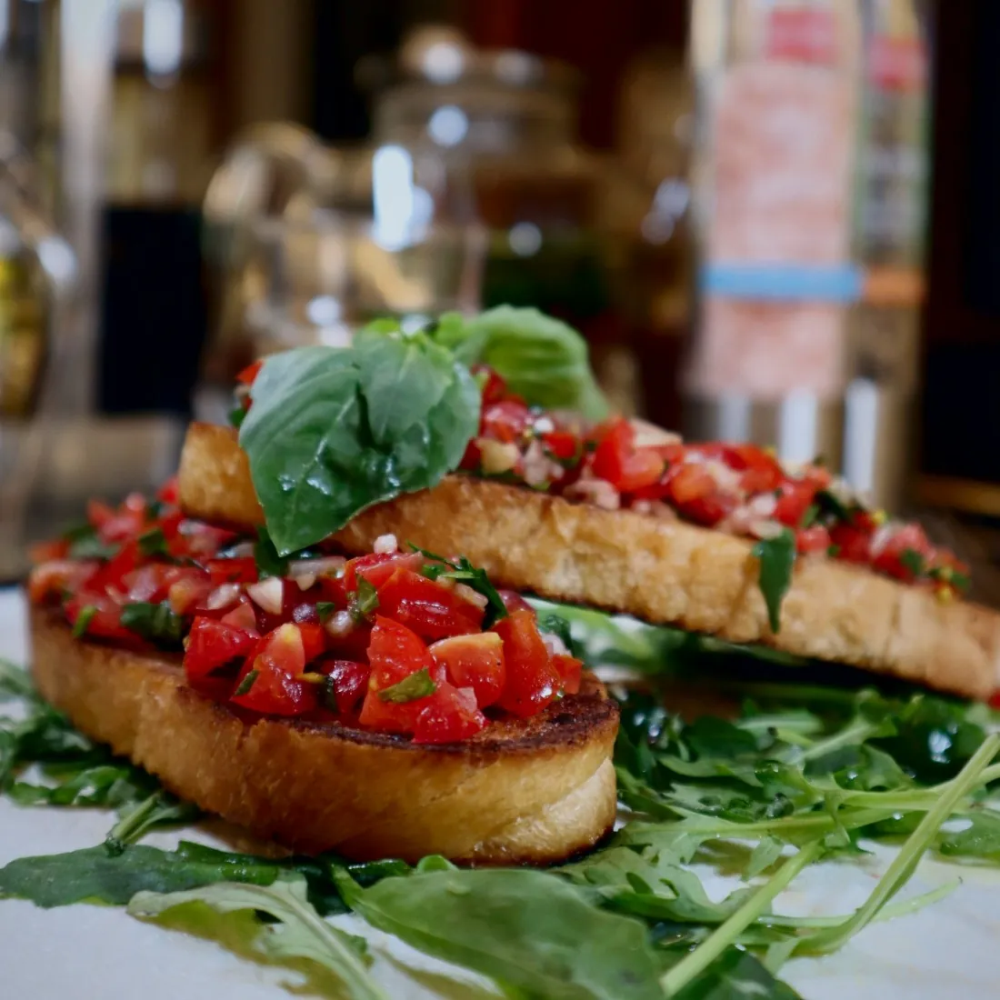
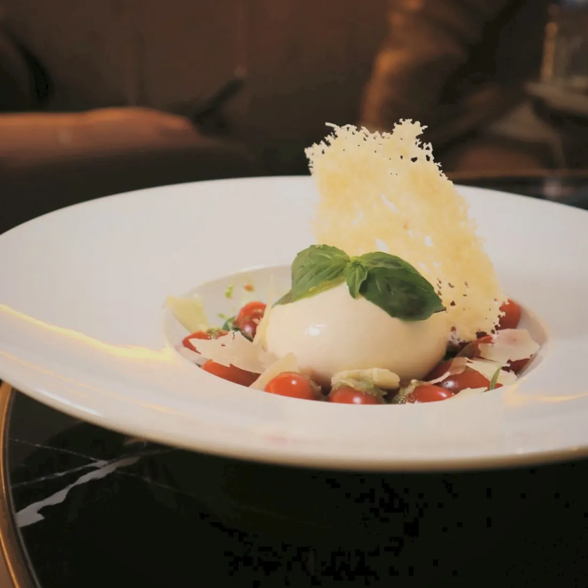
Insalate & Zuppe
سلطات وشوربات
Fritti
مقليات
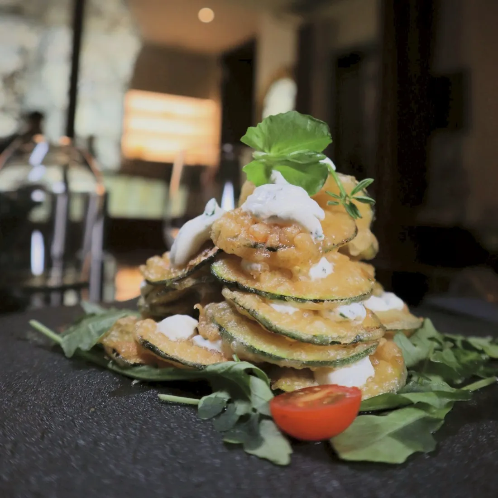
Pasta, Risotto & Ravioli
باستا طازجة
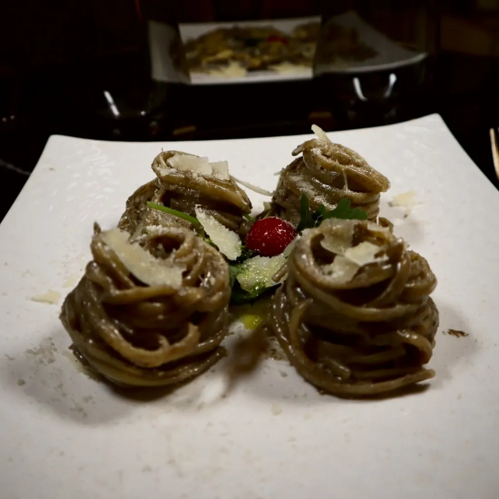
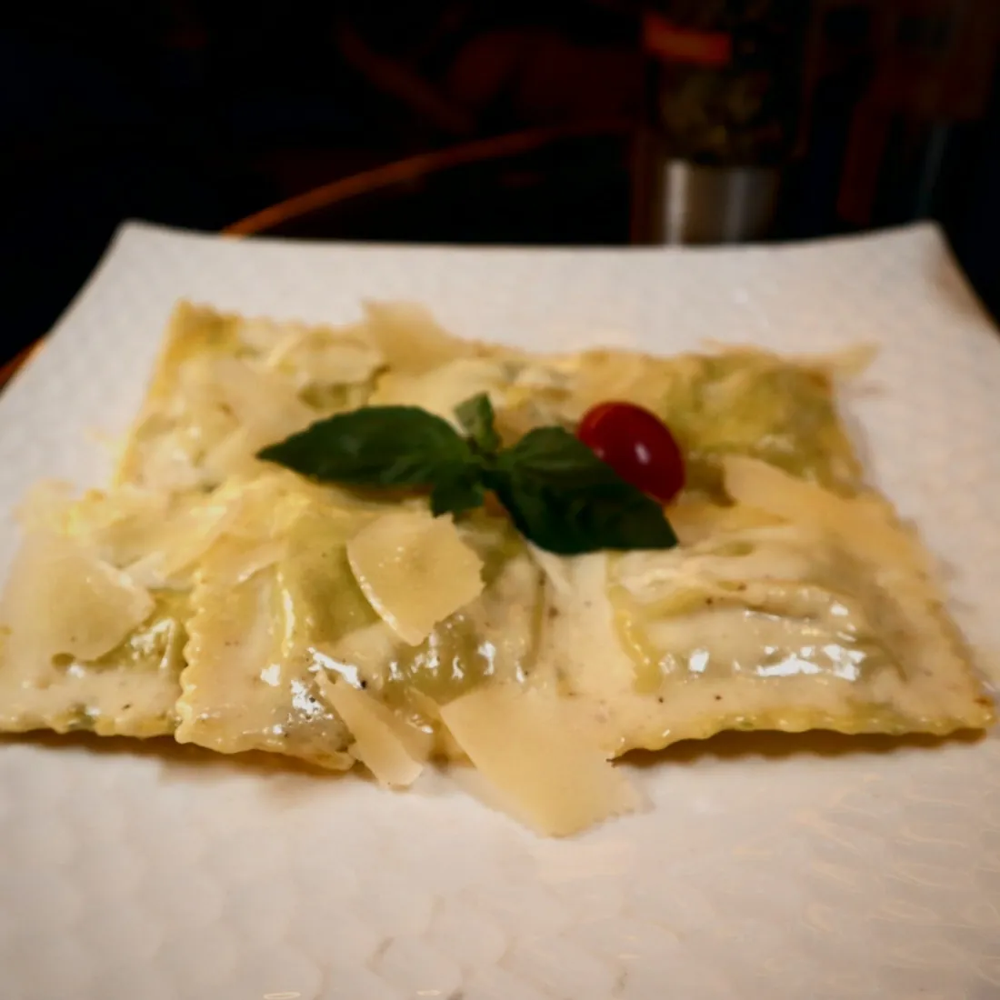
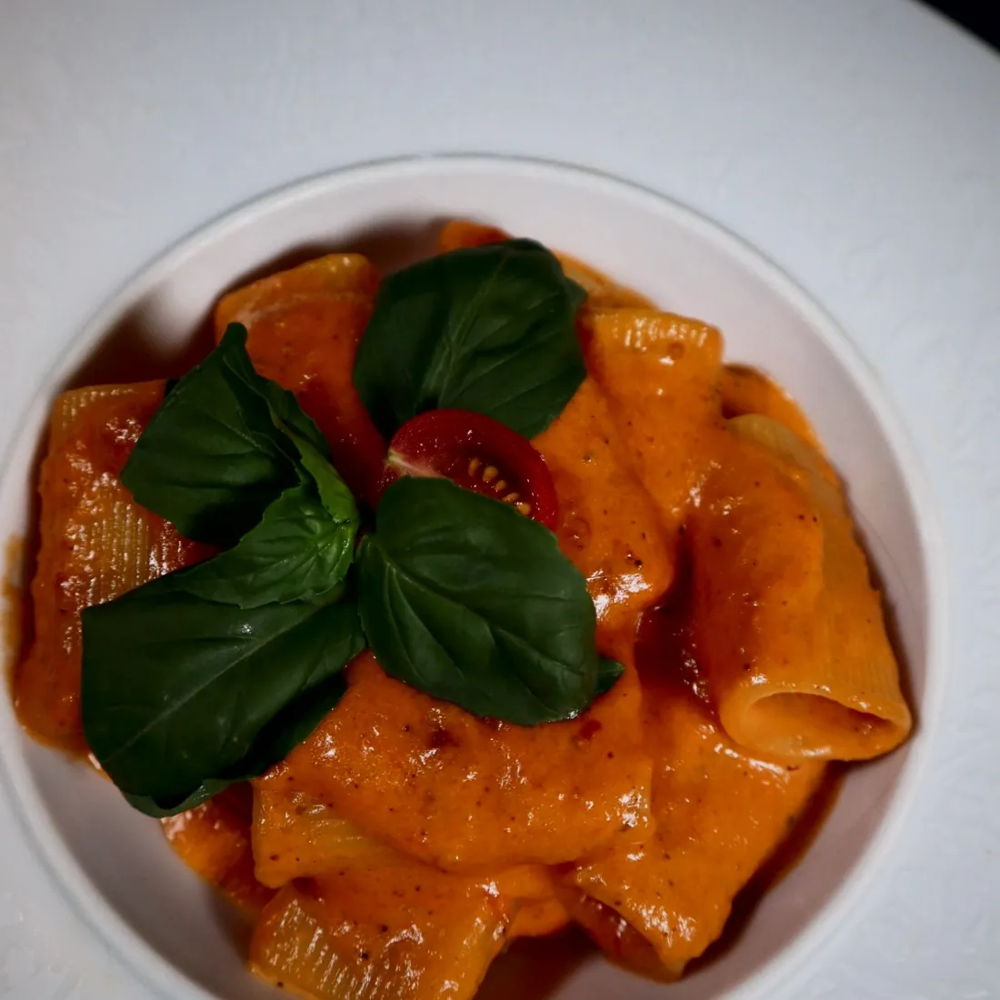
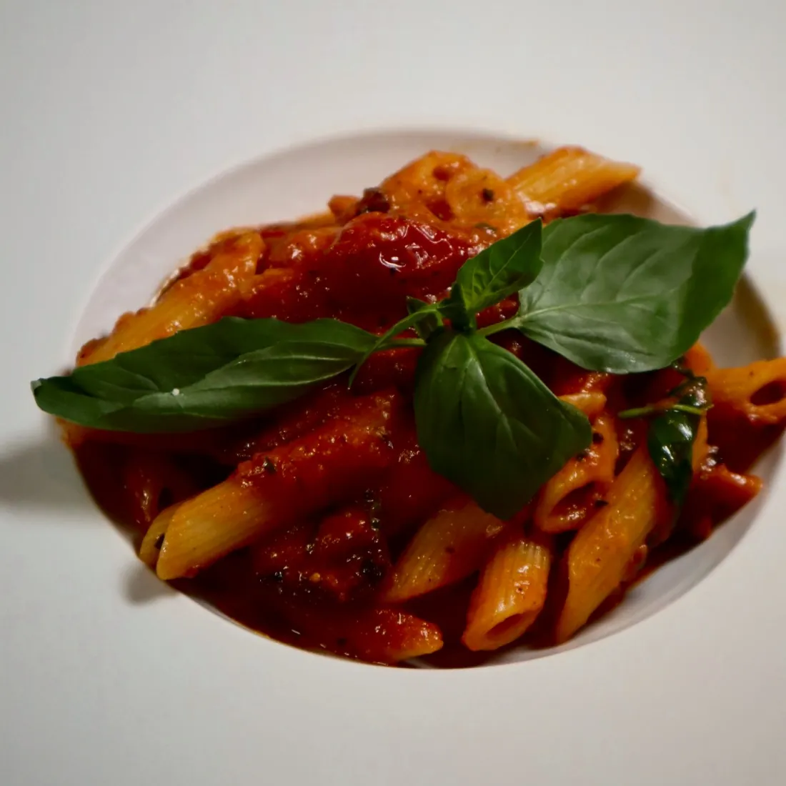
Pinsa
بينسا على الطريقة الرومانية، عجينة خفيفة ومقرمشة
Pesce
أطباق السمك
Carne
لحوم حلال
Contorni
أطباق جانبية
Dolci
الحلويات
★ طبق سيلك المميز · الأسعار صافية باليورو، شاملة الضرائب والخدمة
مسببات الحساسية مذكورة تحت كل طبق. يرجى إبلاغ النادل بأي حساسية.
قائمة المشروبات الكحولية
شمبانياكأسزجاجة
نبيذكأسزجاجة
مشروبات روحيةكأسزجاجة
كوكتيلات
بيرة
الأسعار صافية باليورو، شاملة الضرائب والخدمة
الإفراط في شرب الكحول مضرّ بالصحة، يُستهلك باعتدال.
لاونج وشيشة
شيشة بريميوم في أجواء هادئة وأنيقة، مثالية لسهرة مع الأصدقاء أو كزوجين أو مع العائلة.
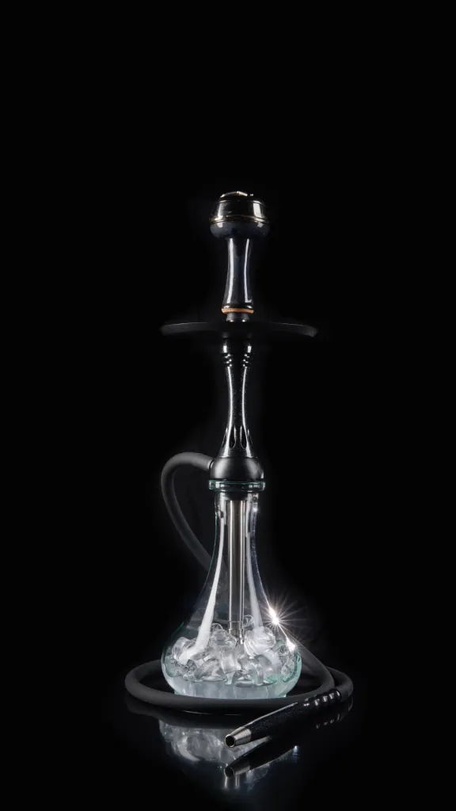
بريميوم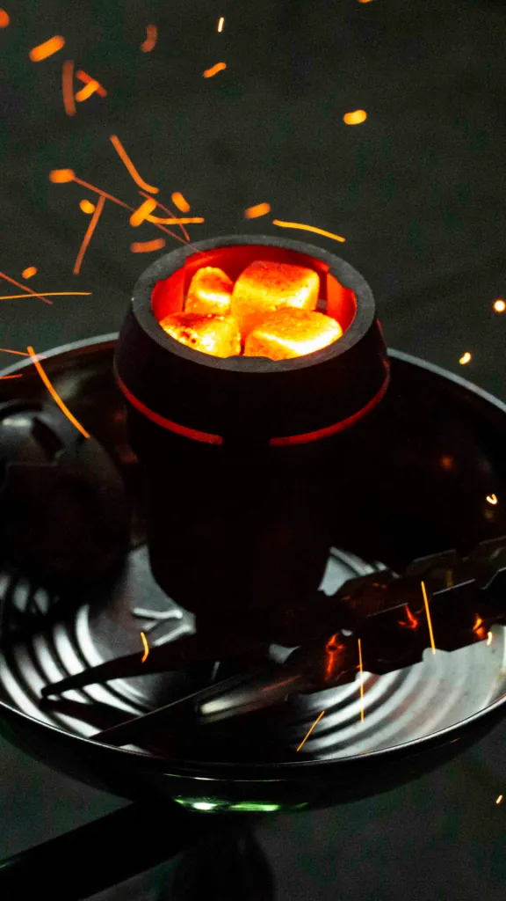
النكهات
أجواء مسائية
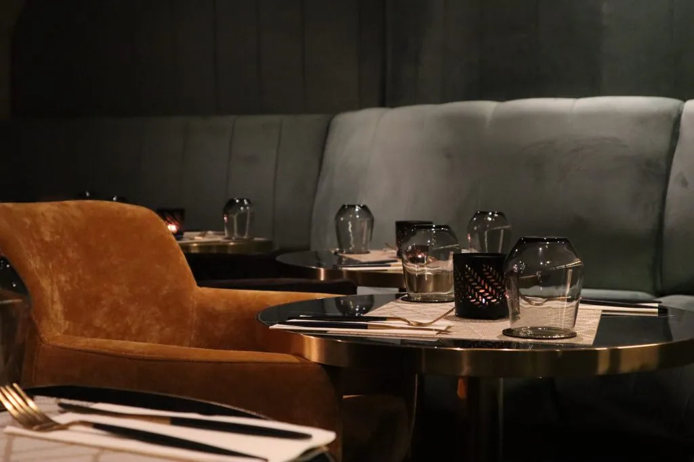
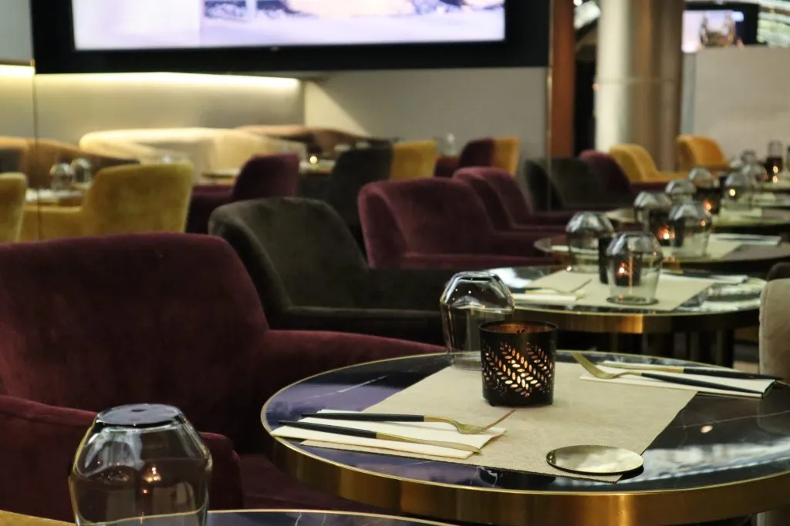
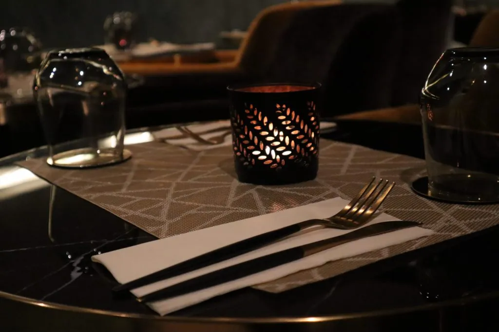
للبالغين فقط. التدخين يضر بالصحة بشكل خطير.
احجز طاولة
من الأحد إلى الخميس حتى الساعة 2 صباحاً، والجمعة والسبت حتى الساعة 5 صباحاً. راسلونا أو اتصلوا بنا وسنحجز لكم طاولتكم.